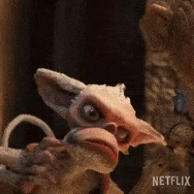
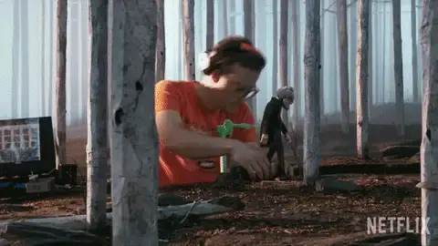

Vol.26 / Dark Fantasy Stop-Motion
魂を宿す木屑：
デル・トロ版『ピノッキオ』解体新書
2026.05.14 UP

🎬 Introduction
ギレルモ・デル・トロ監督が長年温め続けた悲願のプロジェクト。舞台をムッソリーニ政権下のイタリアに移し、ピノッキオの「従順でないこと（不服従）」を美徳として描いた、大人向けのダークファンタジーです。CG全盛の現代にあって、あえてストップモーションで命を吹き込むことの意義を問い直す記念碑的な作品です。
◎ 作者経歴：異形の怪物たちを愛する巨匠
ギレルモ・デル・トロ（Guillermo del Toro）は1964年メキシコ生まれ。幼少期から怪物や幽霊、古いホラー映画に魅了され、自ら特殊メイクや特殊造形を学びました。彼の作品の根底には常に「見た目が恐ろしい怪物は純粋で、本当の怪物は人間の心に潜んでいる」という哲学があります。
◎ 徹底解剖：ギレルモ・デル・トロのピノッキオ
ギレルモ・デル・トロのピノッキオ (2022)
「不完全であること」の美しさ
従来のディズニー版のような滑らかで可愛いピノッキオ像とは異なり、本作のピノッキオは「削り残し」や「釘」がむき出しになった、荒々しくも生々しい造形です。
ファシズムという「全員が同じように振る舞うことを強要される社会」において、木の操り人形であるピノッキオだけが誰にも操られず、自由に生きようとする逆説が描かれています。
ピノッキオ はいかにして (ギレルモ・デル・トロ)
「異形の存在への愛」という点でバートンと深く共鳴。大人のためのダークファンタジーの到達点、その緻密な舞台裏。
◎ 代表作紹介：ダークファンタジーの系譜
パンズ・ラビリンス (2006)
残酷な現実と妖しく美しい迷宮
スペイン内戦直後のファシズム体制下を舞台に、少女オフェリアが迷い込む地下の王国を描く。ペイルマン（手のひらに目がある怪物）など、デル・トロの独創的なクリーチャーデザインが世界中で絶賛され、アカデミー賞3部門を受賞しました。
シェイプ・オブ・ウォーター (2017)
声なき者たちの愛の形
冷戦時代のアメリカ。発話障害のある清掃員の女性と、政府の極秘施設に囚われた「半魚人」との種族を超えた純愛。アカデミー賞作品賞・監督賞を含む4部門に輝き、名実ともに巨匠としての地位を確立しました。
◎ 技術と特徴：手作業への執着とマッケノン・アンド・ソーンダース
『ピノッキオ』の制作にあたり、デル・トロはティム・バートン作品（『コープスブライド』など）でも知られるイギリスの伝説的パペット制作会社マッケノン・アンド・ソーンダースとタッグを組みました。さらに、ストップモーション・アニメーション・スタジオの「シャドウマシン（ShadowMachine）」が撮影を担当しています。

▲ 巨大なセットの中で、1コマずつパペットに命を吹き込むアニメーター
- 🔹 様々なスケールのパペット： 通常の撮影用（約25cm）に加え、コオロギのセバスチャンとの共演シーン用に巨大なピノッキオの頭部などが制作され、スケール感を巧みにコントロールしています。
- 🔹 メカニカルな表情制御： 3Dプリントによる顔の差し替え（リプレイスメント）ではなく、パペットの頭部に複雑なギアを仕込み、六角レンチで皮膚の下から表情を動かすアナログな手法（メカニカル・ヘッド）を多く採用しました。
Mackinnon and Saunders: The Exhibition
イギリスの伝説的パペット制作会社「マッケノン・アンド・ソーンダース」の展示会映像。デル・トロ版『ピノッキオ』を含む、数々のストップモーション作品の精巧なパペットや、皮膚の下に隠された複雑なメカニズムを垣間見ることができます。
パペットアニメーションに通じる文楽
日本の伝統芸能である「文楽（人形浄瑠璃）」もまた、魂を持たない人形に命を吹き込む高度な芸術です。デル・トロ監督をはじめとする世界中のアニメーターたちが、この日本独自の身体表現や人形の「呼吸」、そして人形遣いの存在を消す精神性に強い関心とリスペクトを寄せています。
関連作：村田朋泰特集ー夢の記憶装置
日本のストップモーション・アニメーションを牽引する作家、村田朋泰の特集映像。郷愁を誘う精密なミニチュアとパペットが織りなす「夢」と「記憶」の物語は、ストップモーションが持つノスタルジックな魔力を美しく体現しています。
◎ フィルモグラフィー
-
No.01 クロノス (1993)
- カンヌ国際映画祭 批評家週間賞
- No.02 ミミック (1997)
- No.03 デビルズ・バックボーン (2001)
- No.04 ブレイド2 (2002)
- No.05 ヘルボーイ (2004)
-
No.06 パンズ・ラビリンス (2006)
★アカデミー賞 撮影賞・美術賞・メイクアップ賞 受賞
- No.07 ヘルボーイ/ゴールデン・アーミー (2008)
- No.08 パシフィック・リム (2013)
- No.09 クリムゾン・ピーク (2015)
-
No.10 シェイプ・オブ・ウォーター (2017)
★アカデミー賞 作品賞・監督賞含む4部門 受賞 / ヴェネツィア国際映画祭 金獅子賞
-
No.11 ナイトメア・アリー (2021)
- アカデミー賞 作品賞など4部門ノミネート
-
No.12 ギレルモ・デル・トロのピノッキオ (2022)
★アカデミー賞 長編アニメ映画賞 受賞
- No.13 フランケンシュタイン（原題） (2025予定)
🔍 Animeda! 視点：アニメーションはジャンルではない
デル・トロは「アニメーションは映画の一つのジャンルではなく、映画という『メディア』そのものだ」と語っています。彼の『ピノッキオ』は子供向けのおとぎ話ではなく、死と向き合い、限りある命の美しさを描いた哲学的な作品です。ストップモーションという、物質に一コマずつ命を吹き込む手法自体が、「命とは何か」を問うこの物語の最強のメタファーとして機能しているのです。